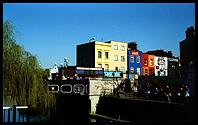
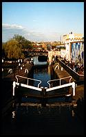

From the micro-blog.
Inglourious Basterds
Tarantino silliness made uncomfortable by historical setting and dark humour, but saved by excellent execution.
Shrink
Good collage, with genuine human feeling: Hollywood sucking its own cock in this case. 'We knew that going in' - so true.
Elegy
Unnecessarily depressing and characterless, a clear demonstration that good actors cannot save a tedious screenplay.
Happy-Go-Lucky
An antidote to Hollywood, & life in general; a delightful portrait of the risks and rewards of choosing to be happy
The Other Boleyn Girl
Pretty and spirited, but fundamentally shallow and without substance or emotion.
Lars & The Real Girl
Mr delusional and nice folks in N Canada. The odd situation creates real emotion; touching and worth seeing.
Existenz (P) January 2002
Excellent teenage variant of The Matrix where the geeks aren't serious
professionals and everything's a game. Ultimately lack's the depth of The
Matrix or the humour of Better Than Life, but you've got to play.
Reservoir Dogs (P) January 2002
Waterboys (C) January 2002
From Hell (C) January 2002
The Mummy Returns (P) January 2002
Another bad film back from the dead - like Indie with more fighting and action but less plot and acting. Dead rubbish.
A Knight's Tale (P) January 2002
Jolly jousting jape follows the fairy tale formula with cute modern touches. Passes the time prettily if frivolously.
Italiensk for begyndere (Italian For Beginners) (C) January 2002
Typically unconventional Dogma 95 film features a group of lonely hearts with great humour and humility.
Le Fabuleux destin d'Amélie Poulain (C) December 2001
Stylishly sentimental and touchingly witty comedy whose heroine searches for her destiny in crypto-modern Paris. This film is your destiny.
Lord of the Rings: The Fellowship of the Ring (C) December 2001
Beautifully visualised fantasy fairy tale goes all out to be the Star Wars of our time but forgets to innovate. Worth getting round to.
The Discovery of Heaven (C) December 2001
Star performances in this erudite and classy but slow adventure; Indie gets intellectual. Not heaven but worth discovering.
U571 (P) December 2001
Sub-standard Hollywood-style sub-maritime action adventure with macho pseudo-actors and a thin crypto-plot. Certain to sink without a trace.
Tomb Raider (P) December 2001
Fun but shallow raid on Indiana Jones and Mission Impossible territory that's good if you like this sort of thing but lacks broad appeal. The next film to come along will bury this one.
The Animal (P) November 2001
Cute but tame comedy whose mad scientist crosses the main character with various animal parts: good but uninspired use of the obvious gags. Leave it in the shop.
Kiss Of The Dragon (C) 4 November 2001
Jet Li scores new credibility as Jackie Chan's successor as a Chinese cop beating up bad-guys in Paris, with appropriate panache and finesse. Hits the spot.
Jurassic Park 3 (P) October 2001
Lively clone of Jurassic Park lacks any real substance, but avoids the horror of the dire previous sequel's irritating kids. Go to the park instead.
Jalla! Jalla! (C) October 2001
Off-beat and intelligent Swedish comedy about two guys with women problems; will the women get their men? Have a go with this one.

Final Fantasy (P) October 2001
Biotech heroine plays alongside macho solder against evil alient spirits in this fantastic computer-generated sci-fi. See it, or at least fantasise.
Up In Smoke (P) October 2001
Wacky 70s cops, drugs and rock 'n' roll farce: plenty of atmosphere but the plot's a bit of a hash. You've got to be in the mood for this one.
Frequency (P) October 2001
Back To The Future meets Seven in this average cops and killers thriller. Interesting plot, but it's not on my wavelength.
Payback (P) October 2001
A very droll Mel Gibson cashes in on a token bad guy role in this traditionalist gangster flick. You get your money's worth.
The Art Of War (P) October 2001
Undercover superhero does battle with multiple enemies and gets the cute Chinese girl, with now conventional ideas from many allied films. It's worth following the action.

Second Skin (P) 3 October 2001
Rather souless gangsters-after-the-money scenario, with second-rate plot. Don't give this a second look.
2010 (P) 3 October 2001
Moody sci-fi sends another dated spaceship to Jupiter, for more restrained astronautical action. It ain't Kubrick but it's a worthy sequel.
The Game (P) September 2001
Masterful action film with a sufficiently clever plot to keep you thinking about the next move. Get this and play it.
Eraser (P) September 2001
Standard Arnie shoot-em-up with damsel in distress saved from gun toting bad guys: just want you wanted but no lasting impression. Fire and forget.
Love And Sex (P) September 2001
Thoughtful update on the thirty-somethings' relationship that doesn't push you, or either of them, very far. Worth the effort, you have to work on it.
X-Men (P) September 2001
Cheesy superheroes versus evil bad guy jape; Men In Black without the humour or class. Cross off your list.
Urban Legends 2 Final Cut (P) September 2001
Passable college slasher flick with all the standard gruesome (victims) and charming (heroine) elements. Pass on this one.
Almost Famous (P) September 2001
Sensitive 70s tale of aspiring rock journalist touring with aspiring rock band and accomplished groupies. Worth getting into.
The Watcher (P) September 2001
Yet another serial killer taunts traumatised cop repeat, with a tediously repetitive and wooden Keanu Reaves. Wait for it to come around again on TV.
Moulin Rouge (C) September 2001
Delightfully wacky, stunningly produced and skillfully deliverered musical comedy speculacular. Enjoy.
Fight Club (P) September 2001
Bewilderingly dark urban yuppie distopia, with a disturbingly real and poignantly unexpected plot development. Must watch.
The Cube (P) September 2001
Five lost in a bizarre maze of nasty traps are true to type, with just enough style to keep you puzzling over where it ends. Worth a try.
Captain Corelli's Mandolin (C) September 2001 Splendid love story on a beautiful Greek island with plenty to look at; an excellent, and relievingly less tragic, rendition of the book. Be swept away.
One Night At McCools (C) September 2001
Liv Tyler stars in a slightly tacky There's Something About Mary meets Snatch: eye candy for the boys. Have a look.
Rent-A-Friend (D) August 2001
Hilarious Dutch urban comedy, filmed as the opposite of film noir, with a manically twisted plot. Rent, buy or steal!
{kind=link}
{kind=link}
{kind=link}
{kind=link}